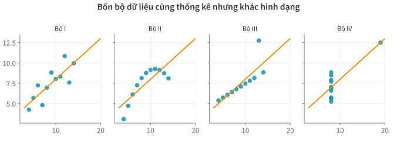
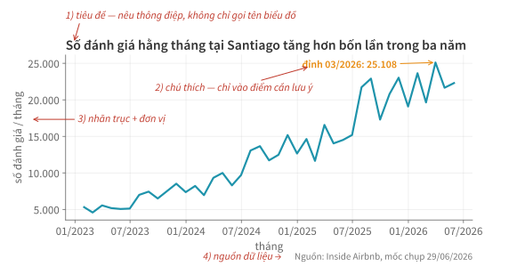
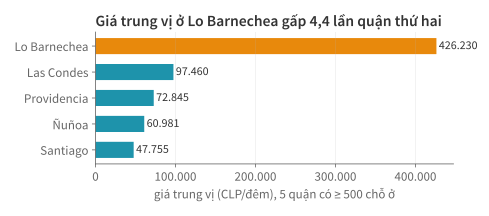
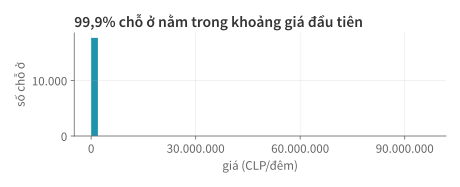
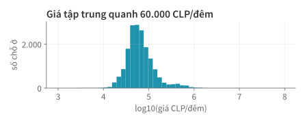
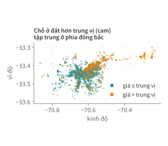
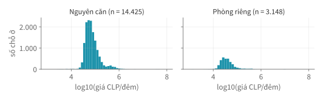
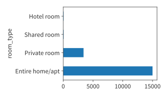
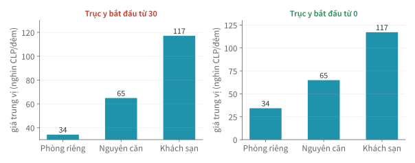

Học kì 1, năm học 2026–2027
Viện Trí tuệ nhân tạo, Trường ĐH Công nghệ, ĐHQGHN
Vẽ biểu đồ để trả lời câu hỏi về dữ liệu bằng matplotlib và pandas.
Ở Bài 11, bạn đã đổi cột comments thành bảng nhãn để phân tích bằng pandas.
Bài này trình bày dữ liệu bằng biểu đồ: số đánh giá theo tháng (Bài 8), giá đã làm sạch (Bài 10).
Bảng thống kê giống nhau chưa chắc dữ liệu giống nhau.
| Bộ | Trung bình x | Trung bình y | Độ lệch chuẩn y | r | Đường thẳng khớp nhất |
|---|---|---|---|---|---|
| I | 9,0 | 7,50 | 2,03 | 0,82 | 3,0 + 0,5·x |
| II | 9,0 | 7,50 | 2,03 | 0,82 | 3,0 + 0,5·x |
| III | 9,0 | 7,50 | 2,03 | 0,82 | 3,0 + 0,5·x |
| IV | 9,0 | 7,50 | 2,03 | 0,82 | 3,0 + 0,5·x |
r: hệ số tương quan.
Bốn bộ dữ liệu này có giống nhau không?

| Câu hỏi | Dạng biểu đồ | Ví dụ trong bài |
|---|---|---|
| Thay đổi theo thời gian thế nào? | đường (line) | số đánh giá mỗi tháng |
| Các nhóm khác nhau thế nào? | cột, thanh ngang (bar) | giá trung vị theo quận |
| Một biến số phân bố ra sao? | histogram (biểu đồ tần suất) | giá mỗi đêm |
| Hai biến số liên quan thế nào? | phân tán (scatter) | kinh độ × vĩ độ, màu theo giá |
Số đánh giá mỗi tháng thay đổi thế nào?
Santiago, mốc chụp 29/06/2026.
print(df.shape, rv.shape)
print(df[["neighbourhood", "room_type", "price"]].head(3))
print(rv.head(3))(18534, 19) (690112, 2)
neighbourhood room_type price
0 Ñuñoa Private room 45647.0
1 Recoleta Private room 19856.0
2 Recoleta Entire home/apt 46776.0
listing_id date
0 52811 2010-11-13
1 52811 2011-03-23
2 52811 2012-01-23df: mỗi hàng một chỗ ở (giá: CLP/đêm).rv: mỗi hàng một đánh giá.
# bỏ tháng 06/2026 chưa trọn (mốc chụp 29/06)
thang = (rv[rv["date"] < "2026-06-01"]
.set_index("date")
.resample("ME").size()
.loc["2023":])
print(thang.tail(3))date
2026-03-31 25108
2026-04-30 21656
2026-05-31 22296
Freq: ME, dtype: int64fig, ax = plt.subplots(figsize=(9, 4))
ax.plot(thang.index, thang.values, color="#1E93AB")
ax.set_title("Số đánh giá hằng tháng tăng nhanh từ 2023")
ax.set_ylabel("số đánh giá / tháng")
plt.show()| Lệnh | Ý nghĩa |
|---|---|
plt.subplots(figsize=...) | Figure (cả hình, rộng × cao theo inch) và Axes (khung vẽ) |
ax.plot(x, y, color=...) | vẽ đường qua các điểm |
ax.set_title, ax.set_ylabel | đặt tiêu đề và nhãn trục y |
plt.show() | hiện hình |

| Muốn | Cách viết |
|---|---|
| màu, kiểu đường, dấu điểm (marker) | ax.plot(x, y, color="k", linestyle="--", marker="o") |
| độ dày đường | lw=2 (linewidth) |
| chú giải cho nhiều đường | ax.plot(..., label="Santiago") rồi ax.legend() |
| vạch chia và giới hạn trục | ax.set_xticks([...]), ax.set_xlim(a, b) |
| chú thích một điểm | ax.annotate(chuoi, xy=(x, y), xytext=...) |
| chữ tự do, ví dụ nguồn | ax.text(x, y, chuoi, transform=ax.transAxes) |
So sánh các nhóm, xem phân phối của một biến, tìm quan hệ giữa hai biến.
tk = df.groupby("neighbourhood")["price"].agg(
median="median", n="size")
top = tk[tk["n"] >= 500].sort_values("median")
print(top) median n
neighbourhood
Santiago 47755.0 7182
Ñuñoa 60981.0 1813
Providencia 72845.0 2997
Las Condes 97460.0 2862
Lo Barnechea 426230.0 824Chỉ giữ quận có từ 500 chỗ ở.
fig, ax = plt.subplots()
bars = ax.barh(top.index, top["median"])
ax.bar_label(bars)
ax.set_xlabel("giá trung vị (CLP/đêm)")barh: thanh ngang (bar: cột đứng). bar_label: ghi giá trị ở đầu thanh.

gia = df["price"].dropna()
fig, ax = plt.subplots()
ax.hist(gia, bins=50) # chia trục x thành 50 khoảng
ax.set_xlabel("giá (CLP/đêm)")
ax.set_ylabel("số chỗ ở")
Vì sao gần như chỉ thấy một cột?
fig, ax = plt.subplots()
ax.hist(np.log10(gia), bins=50)
ax.set_xlabel("log10(giá CLP/đêm)")
| log10(giá) | 4 | 5 | 6 |
|---|---|---|---|
| giá (CLP/đêm) | 10.000 | 100.000 | 1.000.000 |
diem = df.dropna(
subset=["price"])
tv = diem["price"].median()
mau = np.where(
diem["price"] > tv,
CAM, XANH)
fig, ax = plt.subplots()
ax.scatter(
diem["longitude"],
diem["latitude"],
s=6, c=mau, alpha=0.45)
np.where: chọn màu theo điều kiện. s: cỡ điểm; c: màu từng điểm; alpha: độ đục. CAM, XANH: hai mã màu khai báo sẵn.
co_gia = df.dropna(subset=["price"])
nc = co_gia[co_gia["room_type"] == "Entire home/apt"]
pr = co_gia[co_gia["room_type"] == "Private room"]
fig, axes = plt.subplots(1, 2, figsize=(10, 3.5),
sharex=True, sharey=True)
axes[0].hist(np.log10(nc["price"]), bins=50)
axes[1].hist(np.log10(pr["price"]), bins=50)
plt.subplots(1, 2): 1 hàng, 2 khung (axes[0], axes[1]); sharex, sharey: chung thang trục.
Chọn dạng biểu đồ và cột dữ liệu cho mỗi câu hỏi:
reviews_per_month)?number_of_reviews_ltm) có rẻ hơn không?Vẽ thử câu 3 trong notebook, không quá 6 dòng code.
Xem nhanh bằng pandas chỉ cần một dòng; hình cho báo cáo thì lưu bằng code.
.plotdem = (df["room_type"]
.value_counts())
ax = dem.plot.barh()
plt.show().plot.barh(): thanh ngang từ Series, trả về ax.

savefigfig = ax.figure # Figure chứa ax vừa vẽ
fig.savefig("figures/so_cho_o_theo_loai.svg",
bbox_inches="tight")bbox_inches="tight": cắt sát lề, không mất chữ ở mép.
| Hình | PNG | SVG | |
|---|---|---|---|
| Đường, 41 điểm | ~48 KB | ~20 KB | ~6 KB |
| Bản đồ điểm, 17.688 điểm | ~156 KB | ~2,7 MB | ~295 KB |
Bản đồ điểm, rasterized=True | ~156 KB | ~188 KB | ~122 KB |
rasterized=True: riêng lớp điểm lưu thành ảnh, chữ và trục vẫn nét.plt.rcParams.update({
"axes.spines.top": False, # bỏ viền trên
"axes.spines.right": False, # bỏ viền phải
"axes.grid": True, # bật lưới
"grid.alpha": 0.25, # lưới mờ
"font.size": 12,
})Khai báo một lần ở đầu notebook.
Số liệu đúng, cách vẽ vẫn có thể làm người đọc hiểu sai.

Thanh khách sạn trông dài gấp ~20 lần thanh phòng riêng; thực tế chỉ gấp 3,4 lần.
figures/.Dùng fig, ax; xong đổi bài với bạn bên cạnh để kiểm tra năm điểm.
fig, ax: đường, thanh ngang, histogram, phân tán; nhiều khung thì chung thang.alpha..plot để khám phá; savefig để hình sinh lại được bằng code.tk.loc["Lo Barnechea"] hoặc nlargest.